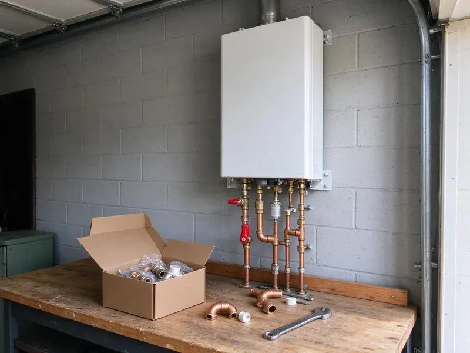

Water Softener Installation in Stillwater, OK
Get rid of scale buildup and enjoy cleaner, softer water throughout your Stillwater, OK home with a new water softener system from JBK Plumbing.
- Licensed Plumbers
- Expert Oklahoma Plumbers
- Quality Brands
- Quick, Reliable Service
Say goodbye to hard water scale with a new softener in Stillwater, OK.
Improve your home's water quality and safeguard your investments with our professional installation services.
Professional Water Softener Installation in Stillwater, OK
JBK Plumbing specializes in professional water softener installation, helping homeowners in Stillwater, OK deal with the challenges of hard water. Our licensed plumbers assess your home's specific needs and recommend the ideal system to improve water quality.
Our expertise includes:
- Installation of all major water softener brands
- Clean plumbing for optimal system integration
- New softener loop installations and bypass valve setups

Additional Plumbing Installation Services in Stillwater, OK
We install water heaters, pumps, lines, and fixtures across Stillwater, OK with precision workmanship that meets every local code.


Customers
Why Choose JBK Plumbing for Water Softener Installation in Stillwater, OK?
Choosing the right water softener and having it installed correctly is essential for its performance and longevity. Our experienced plumbers ensure a professional installation every time.
- Clean Installation, We use quality fittings and include a bypass valve for simple service.
- Healthier Skin & Hair, Get rid of the harsh effects of minerals, leading to softer skin and shinier hair.
- Proper Sizing, We size by grain capacity, household size and daily water use.
Citywide Coverage
JBK Plumbing proudly serves every neighborhood across Stillwater for water softener installation. Whether you're in the north, south, east or west, our teams are dispatched promptly to provide timely service.
Experienced Team
Our team understands local water conditions and the effects of hard water on plumbing. They recommend systems that balance performance, salt use and budget.
Safety-First Approach
Before, during and after installation, our plumbers follow strict safety protocols, protecting your home and family. We verify that all installations comply with Stillwater and Oklahoma plumbing regulations for your peace of mind.
Trusted Certified Stillwater Plumbing Services Professionals
At JBK Plumbing, we take pride in providing certified plumbing services throughout Stillwater, OK. Backed by leading industry credentials, our experienced plumbers combine technical skill with genuine customer care. Whether it is repair, installation, or maintenance, we follow strict safety and quality standards to deliver lasting results you can trust.
Call Us Now PHCC Plumbing Contractor Recognition
PHCC Plumbing Contractor Recognition Better Business Bureau (BBB) Accreditation
Better Business Bureau (BBB) Accreditation Angi Certified Pro
Angi Certified Pro ISO 9001 Quality Management Certification
ISO 9001 Quality Management CertificationReliable Water Softener Installation Services in Stillwater, OK
Water Softener Installation for New Construction in Stillwater, OK
Planning for a new home in Stillwater, OK? Installing a water softener during new construction is an excellent time to integrate it seamlessly into your plumbing system. We work with builders and homeowners to design and install the right water softening solution from the ground up, preventing hard water issues before they even start.

High-Efficiency Water Softener Installation in Stillwater
Modern water softeners offer improved efficiency, using less salt and water during the regeneration process. We install a range of high-efficiency models that can lead to significant savings on your utility bills. These systems are an excellent long-term investment for any Stillwater homeowner concerned about resource consumption.
Water Softener Installation Cost in Stillwater, OK
Softener installation costs depend on system type, capacity and whether you need a loop. Installing on an existing loop is faster and costs less than adding a new loop. Salt-free systems and combination filters vary in price. We give you a written quote that includes equipment, labor and setup. We also explain long-term salt and maintenance costs.
Water Softener Replacement & Upgrades in Stillwater, OK
If your old water softener is failing, inefficient or no longer meets your needs, JBK Plumbing offers professional water softener replacement and upgrade services in Stillwater, OK. We can remove your outdated unit and install a newer, more efficient model, often with advanced features like smart controls or higher capacity. Upgrading can save you money on salt and water usage in the long run.
Pelican Water Softener Installation in Stillwater, OK
Pelican Water Systems offer a variety of water treatment solutions, including both salt-based softeners and salt-free conditioners. If you've chosen a Pelican system for your Stillwater, OK home, JBK Plumbing can provide expert installation. Our plumbers make sure of proper sizing, secure connections and correct startup procedures to maximize the effectiveness and lifespan of your Pelican water softener or conditioner.
Culligan Water Softener Installation in Stillwater
We are experienced in installing a wide range of water softener brands, including popular models from Culligan. Culligan systems are known for their reliability and performance. Our technicians are familiar with the installation requirements for many Culligan models, making sure your new system is set up correctly for optimal hard water treatment in your Stillwater residence. We handle all connections and programming.
Softener Loop Installation in Stillwater
A softener loop is the plumbing connection that routes your main water line through a softener. Many newer homes include a loop, but older homes often do not. We cut into the main line, install the loop and add a bypass valve. We keep outdoor hose bibs and irrigation on hard water when possible to save salt. A proper loop makes future service easy.

Reverse Osmosis Drinking Water Systems in Stillwater
Reverse osmosis systems remove dissolved solids, which can be high in some water supplies. We install RO units under the kitchen sink with a dedicated faucet. Some systems also connect to refrigerators or ice makers. RO pairs well with a softener for complete water treatment. We change filters on a schedule so the system keeps performing.
Water Softener Installation Near Me in Stillwater, OK
If you're searching for 'water softener installation near me' in Stillwater, OK, look no further than JBK Plumbing. Our local teams are well positioned to provide fast response times and expert service throughout the area. We focus on local homeowners, ensuring quick and efficient installations.
We understand the need for soft water in homes with hard water problems. Our commitment to the Stillwater community means we're always ready to deliver dependable water softener installation services right to your doorstep. Call us today to experience the difference.
JBK Plumbing at a Glance
- Fully licensed plumbing team covering Stillwater, OK
- Same-day appointments and 24/7 emergency response
- Clear written estimates, no hidden fees
- 4.8-star rated by 318+ Oklahoma customers
Stillwater Map
Stillwater Information
- Population
- 49,525
- Area codes
- 405/580/918
- Service area
- Stillwater and communities within 40 miles
- Nearby
- Edmond, Enid, Midwest City, Oklahoma City
Many rural homes rely on private wells, and some groundwater carries high mineral content that benefits from softening or filtration. A properly installed softener protects water heaters, pipes and fixtures in Stillwater, OK homes from constant scale buildup.
Expert Services
Trust our professionals for reliable JBK Plumbing solutions in Stillwater, OK.
Our Specialized Plumbing Services in Stillwater, OK
At JBK Plumbing, we provide a complete range of plumbing services across Stillwater, OK. From leak detection to full system installations, our team ensures fast, precise, and affordable service for both residential and commercial properties. Explore our core services below:


How Our Water Softener Installation Process Works in Stillwater, OK
Our water softener installation process is designed for efficiency and customer satisfaction. We make sure every step is clear and matched to your Stillwater home's needs.
Request a Quote
Call us at (405) 507-8396 to schedule a consultation. We'll discuss your needs, test your water and provide a written, no-obligation quote.
System Selection
Our plumbers will help you choose the best water softener system for your home, considering water hardness, usage and budget.
Professional Installation
Our certified plumbers will install your new water softener, making sure all plumbing and connections are done to code and function properly.
Frequently Asked Questions About Water Softener Installation in Stillwater
Most water softener installations cost $1,500 to $4,000 including equipment. Adding a new softener loop usually adds $500 to $1,500 depending on access.
In many areas, a plumbing permit is required for major plumbing alterations like water softener installation to ensure compliance with local codes. JBK Plumbing will advise you on any necessary permits for your Stillwater installation and can assist with the application process.
We offer a warranty on our workmanship, and the water softener units themselves come with manufacturer warranties, which usually range from 5 to 10 years for the tank and control valve. We will provide you with all warranty details for your particular system after installation.
The warranty typically covers both the water softener unit itself, which varies by manufacturer (often 5 to 10 years on major components), and our installation workmanship, usually for one year. We make sure all manufacturers' warranties are honored and that our installation meets their specifications.
Control valves typically carry 5 years of coverage, and tanks often carry 10 years or more. We also warranty our installation work.
Maintenance mainly involves periodically adding salt to salt-based systems, typically every 4 to 8 weeks depending on water usage and hardness. It's also good practice to schedule annual check-ups with a professional plumber to ensure the system is operating efficiently and to address any potential issues.
White scale on faucets, spotty dishes, dry skin and reduced water heater performance are common signs. A water test confirms hardness levels.
In many cases a separate permit is not required for a standard residential water softener installation. However, if the installation involves significant changes to your home's main water line or drainage system, a permit might be necessary. Our team will advise you on any permit requirements for your project in Stillwater.
What People Are Saying About Our Plumbing Experts?

Laura S.
I scheduled a water heater replacement, and the team made the process smooth and affordable. The new unit works perfectly, and they cleaned up after completing the job.
Water Heater Replacement · Edmond, OK
James P.
Our commercial plumbing system had a leak under the sink, and JBK Plumbing handled it professionally. The plumbers arrived quickly and restored everything without disruption to our customers.
Commercial Plumbing · Stillwater, OK
Mark T.
When our office needed drain cleaning, JBK Plumbing provided quick, reliable service. The plumber arrived on time and made sure every drain flowed perfectly before leaving. Very satisfied.
Drain Cleaning · Midwest City, OKSofia M.
Two new toilets installed in one visit, no mess left behind, and the tech even adjusted a faucet he noticed was dripping. Fair pricing and really friendly.
Toilet Installation · Moore, OK
Emily R.
I called JBK Plumbing for plumbing repair, and the technician was fast, polite, and thorough. They explained the problem clearly and fixed it the same day. I will definitely hire them again. Highly recommended!
Plumbing Repair · Stillwater, OK
Patricia H.
We had a slab leak that two other companies could not find. JBK Plumbing located it in under an hour, explained our options, and the price matched the quote to the dollar.
Slab Leak Repair · Enid, OK